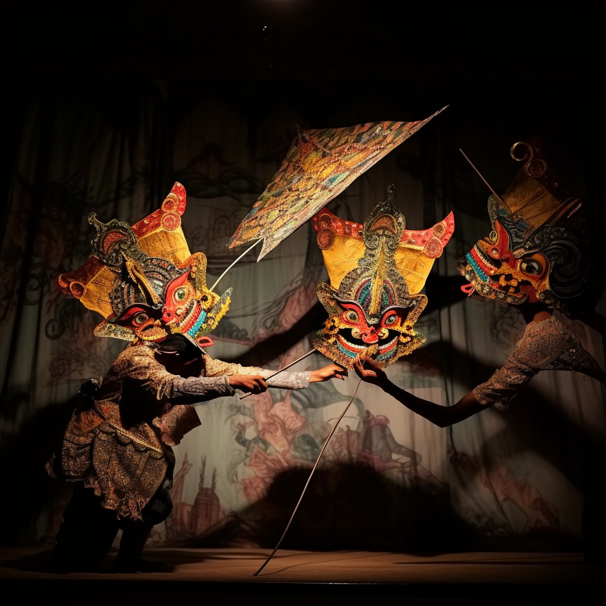

Wayang Kulit Maestros
Marvel at the artistry of skilled wayang kulit puppeteers as they breathe life into ancient myths and legends through masterful performances. With flickering oil lamps casting enchanting shadows, these virtuosos manipulate intricately designed leather puppets, skillfully narrating stories from the Mahabharata, the Ramayana, and local folklore. The rhythmic chants and soulful music of the gamelan orchestra further enhance the captivating experience, transporting audiences to a realm where history, spirituality, and art converge.